Mobbin · Bonsai e Linear
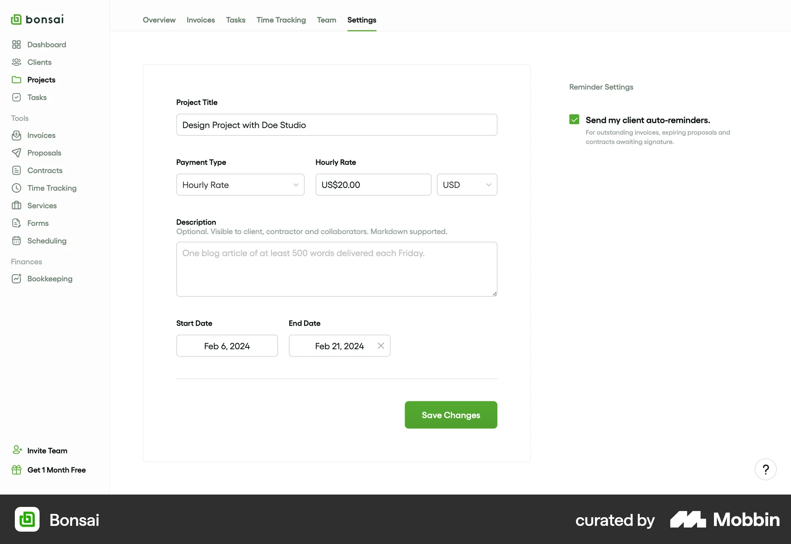
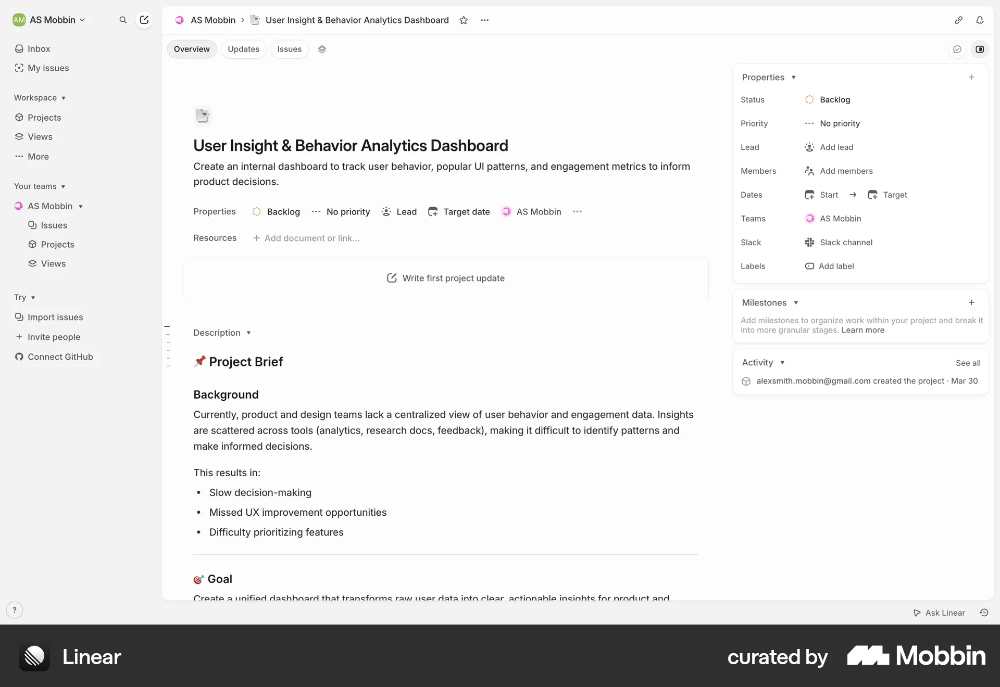
Prévia navegável isolada · comparação entre referências Mobbin e implementação NITE Connect
Formulário contínuo para identidade e período, com ações de edição no mesmo contexto.


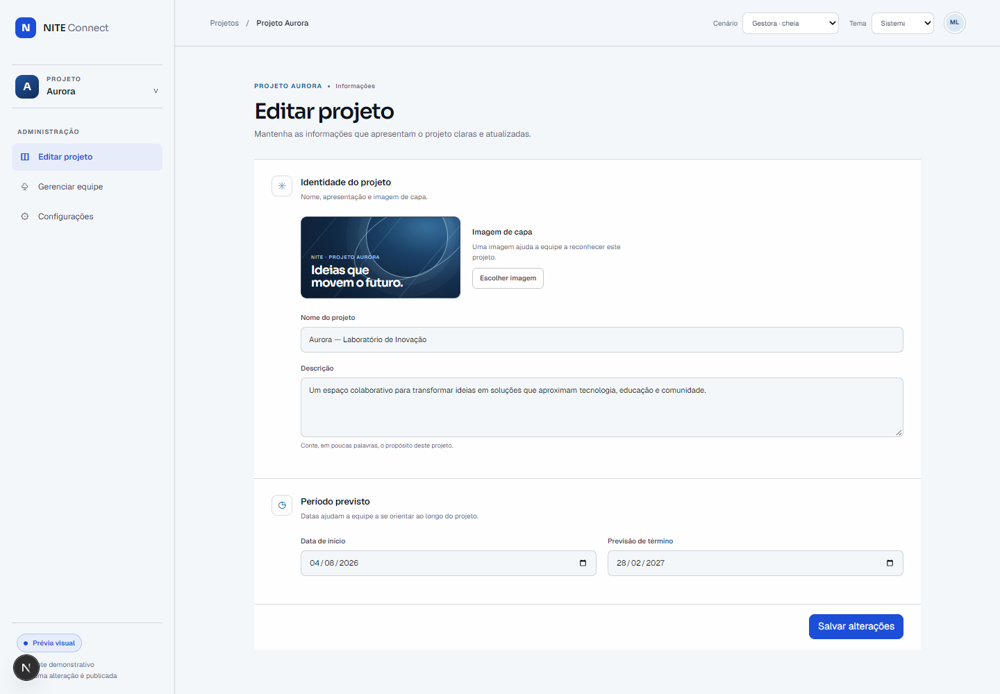
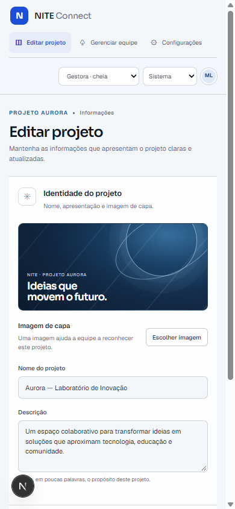
Lista de pessoas e solicitações em seções independentes, com ações por integrante e estado vazio explícito.
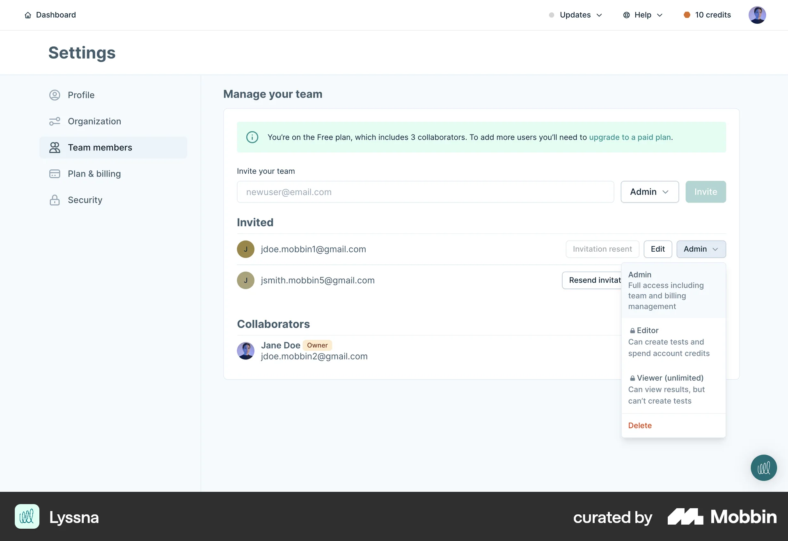
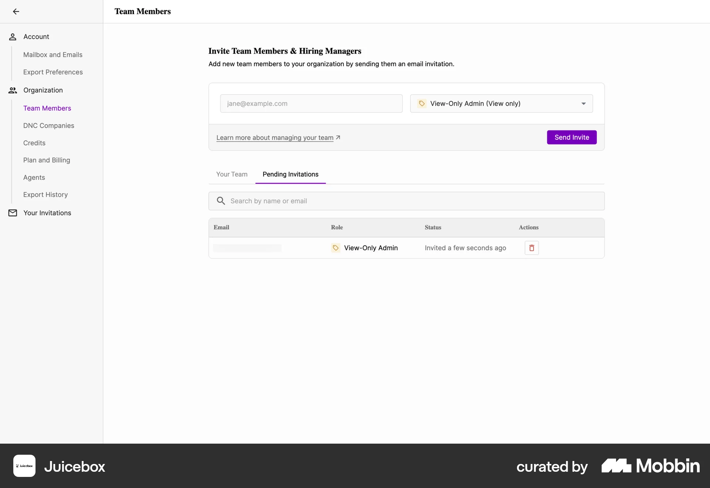
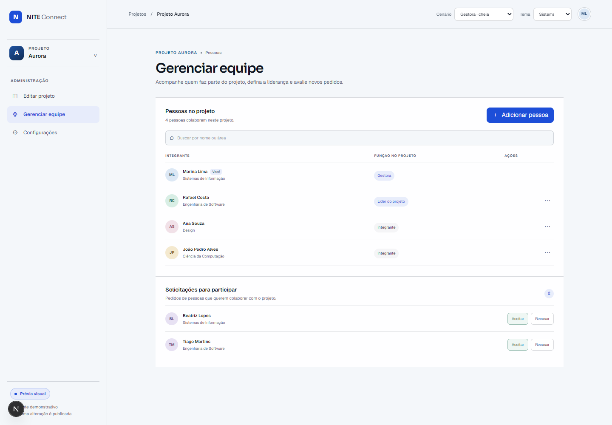
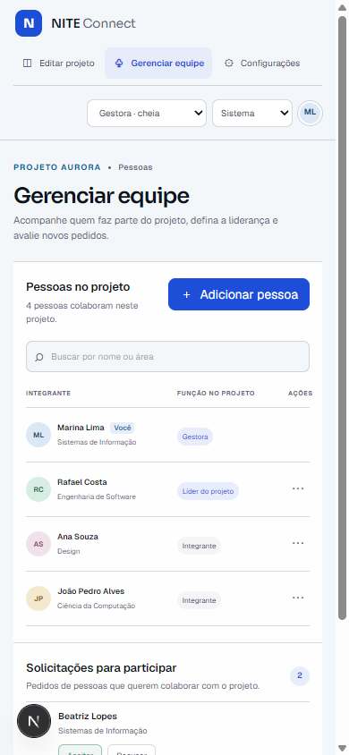
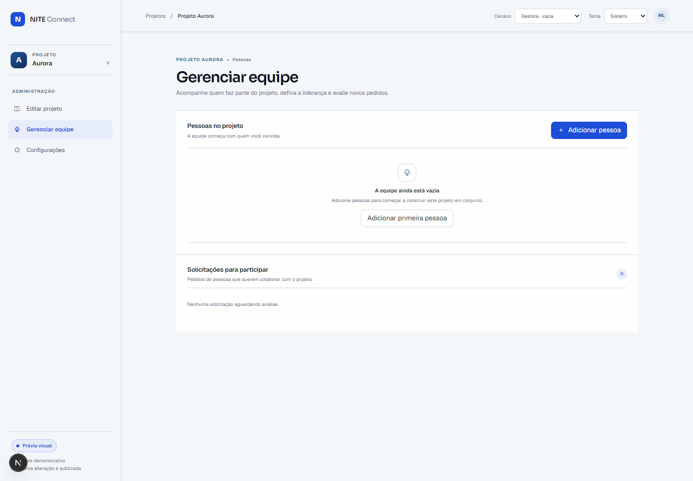
O cenário vazio mantém o convite disponível, comunica que ainda não há participantes e mostra zero solicitações pendentes.
Resumo da situação e ingresso primeiro; operações administrativas agrupadas no fim e condicionadas ao papel.
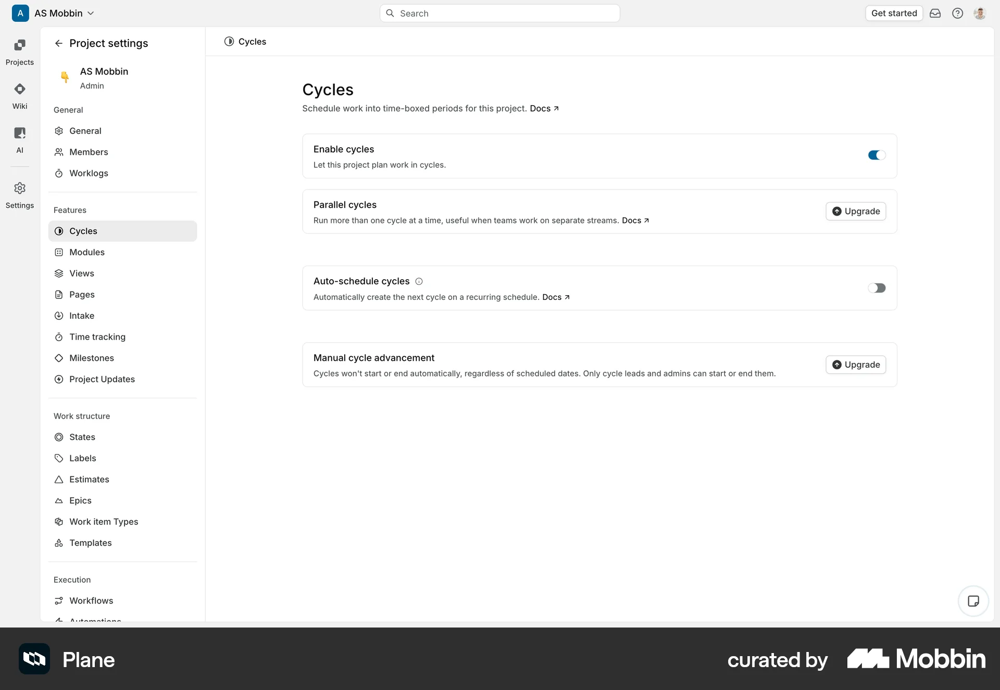
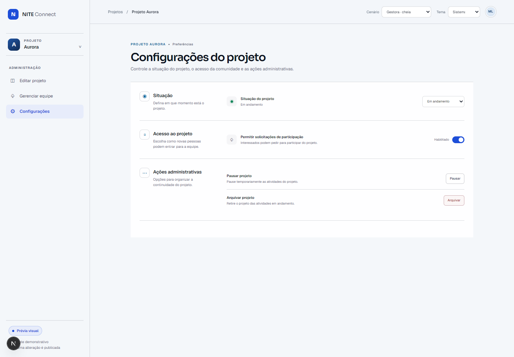
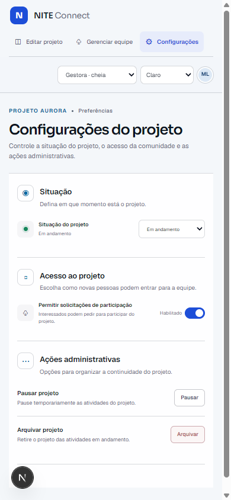
Na visão de integrante, os campos permanecem informativos e as ações administrativas não aparecem.
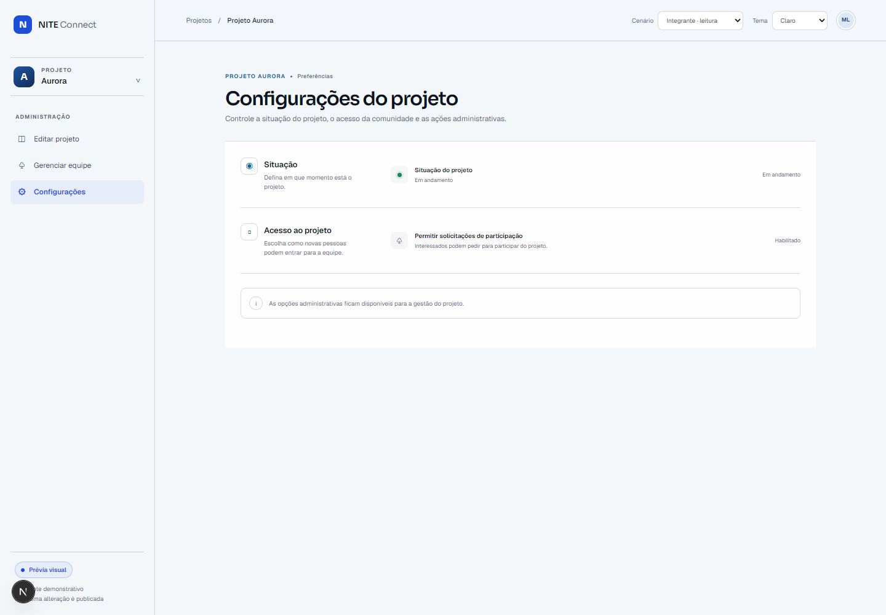